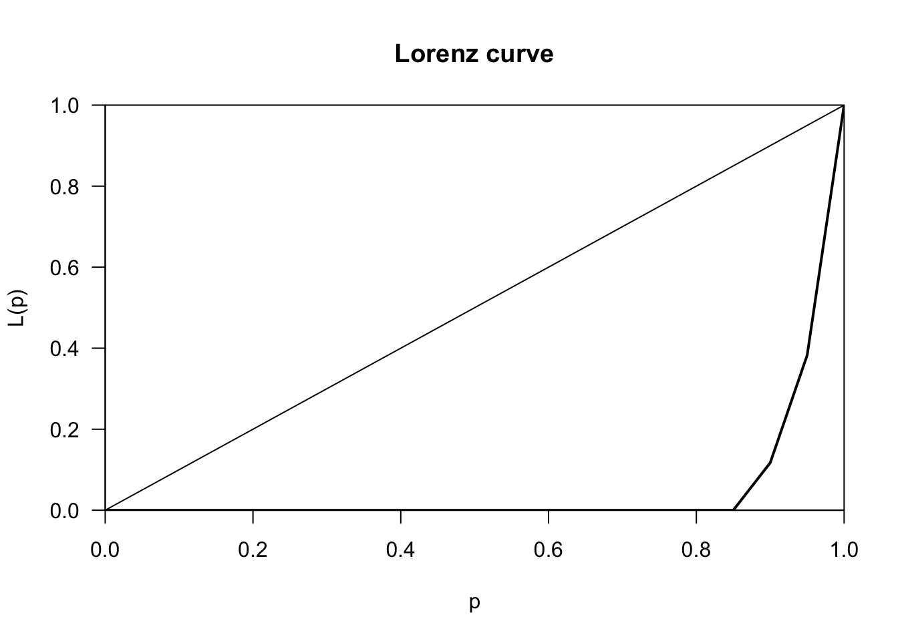

Chapter 9 Crime along spatial networks
9.1 Introduction
In the previous chapter we explored how the techniques for spatial pattern analysis can be used to study the varying intensity of crime across space. We introduce the key idea of spatial randomness. These methods were developed to study locations in a continuous plane and are also referred to as planar spatial analysis. Point crime data, however, has an inherent structure to it. There are parts of our study region where it cannot appear. Since typically the data will be geocoded at the street level address, crime data almost always will appear alongside the spatial network of roads and streets. Crimes won’t appear randomly anywhere in our 2 dimensional representation of the city, they will only appear along the street network covering this city. We can see this in the following example from Chicago using data from spatstat:
FIGURE 9.1: Crime along street network in Chicago
Clearly the offences are constrained to only occur along the street network. This is not a homogeneous Poisson process along the whole study surface, because there is an underlying structure. If we want to investigate heterogeneity on intensity, for example, we would need to account for that underlying structure, the fact that the points can only be located along the network and not in other parts of the study region. Several authors have argued that crime is best represented and predicted if we focus in the street network rather than other kind of level of aggregation and that this has clear implications for operational policing (Singleton and Brunsdon 2014; Roser et al. 2017). It is clear that if our crime occurrences are collected and represented along a spatial network we need to ensure we use techniques of analysis and visualisation that respect this existing underlying structure in our data.
The software infrastructure for spatial analysis along networks, however, is still not as developed and consolidated. Partly this is to do with the statistical and computational challenges when we move from planar to linear network analysis. There is some software such as SANET that was originally conceived as a toolbox for ArcGIS but with a beta standalone version already available (Okabe and Sugihara 2012). R users and developers are working to expand the functionality of R in this regard. It was only in 2020 that Lucas van der Meer, a Dutch spatial data scientist, published the first release of the sfnetworks package to facilitate the creation and analysis of spatial networks. Two other useful packages (SpNetPrep and DRHotNet) developed by Briz-Redón and colleagues are also only a couple of years old (Briz-Redón, Martı́nez-Ruiz, and Montes 2019a, 2019b). Another recent package, released in 2021, is spNetwork by Jeremy Gelb and Philippe Apparicio that can be used for kernel density estimation along networks (Gelb 2021). Finally, the package spatstat, that we covered in the last chapter, also provides functionality for the analysis of events along spatial networks.
In this chapter we will provide an introduction to the study of crime along networks by exploring the following:
- the creation of network representations from geographical vector objects
- linking data to meaningful micro-places such as street segment (or in in a transportation example, train line segment) or street junction (or for transport research a train or bus station)
- introducing the idea of hot routes
- evaluating crime concentration in these types of micro places using Gini coefficient and Lorenz curve
- street profile analysis - an alternative (non-spatial) way to visualise crime along a network
- introducing the functionality of
spatstatfor the analysis of events along networks
# Packages for reading data and data carpentry
library(readr)
library(readxl)
library(janitor)
library(tidyr)
library(dplyr)
library(tibble)
library(lubridate)
# Packages for handling spatial data
library(sf)
library(lwgeom)
library(sfnetworks)
library(spatstat)
library(spatstat.linnet)
library(maptools)
# NOTE: maptools is still required for the as.linnet.SpatialLines() function,
# but will be retired by the end of 2023. Look out for where
# as.linnet.SpatialLines() function will migrate!
# Package for computing Lorenz curve
library(ineq)
# Packages for visualisation and mapping
library(ggplot2)
library(ggpubr)
library(raster)
library(leaflet)
# Packages providing accesss to data
library(osmdata)
library(tigris)It is not only in the case of street networks that understanding spatial point patterns along a network might be more meaningful, there are other networks we might want to consider. Transport networks are a good example of this and are receiving an increasing interest in criminology and crime analysis (Newton 2008; Tompson, Partridge, and Shepherd 2009; Ceccato 2013).
9.2 Constructing and storing a spatial linear network
The first difficulty one encounters when wanting to do analysis along spatial networks is to get the data for such geographical element in the proper shape. It is fairly straightforward to get files with the administrative boundaries for census geographies, as we have seen in previous chapters. This kind of geographical data is widely available in official and open repositories (see also Appendix C: sourcing geographical data for crime analysis). Getting data for spatial networks used to be a little bit trickier, although it is getting better. One could, for example, use the osmdata package to access Open Street Map data for a road network (we also discuss this in greater detail in Appendix C). Or, if you analyse data from the United States, you could use the tigris package to extract geometries which represent road networks.
Below we show how to obtain this data for Kensington, a popular neighbourhood in Toronto city centre through osmdata and for Manhattan using tigris. As we’re querying data from Open Street Map, first we draw a bounding box around the area we are interested in, then select “highways” as the feature to extract (see Appendix C for details on building OSM queries). As discussed by Abad, Lovelace, and Meer (2019), the osmdata package turns streets that form loops into polygons, to ensure we end up with lines we use osm_poly2line.
# using osm data
highways_heswall <- opq("Heswall, UK") %>%
add_osm_feature(key = "highway") %>%
osmdata_sf()
heswall_lines <- highways_heswall$osm_linesNow let’s use the tigris package to get TIGER/Line shapefiles from the United States Census Bureau. The roads() function returns the content of the all roads shapefile - which includes primary roads, secondary roads, local neighborhood roads, rural roads, city streets, vehicular trails (4WD), ramps, service drives, walkways, stairways, alleys, and private roads. It returns these as an sf object.
# using tigris
manhattan_roads <- roads("NY", "New York")We can now plot these two side by side
# plot results
plot_1 <- ggplot(heswall_lines) + geom_sf() + theme_void()
plot_2 <- ggplot(manhattan_roads) + geom_sf() + theme_void()
figure_1 <- ggarrange(plot_1, plot_2, labels = c("Heswall", "Manhattan"),
ncol = 2, nrow = 1)
figure_1FIGURE 9.2: Street network geometries for Salford in Toronto, CA and Manhattan, in New York, USA
What we have is two sf object containing linestrings. Linear networks indeed can be represented in R by simple features wit sf as here, or with the class SpatialLines of package sp. However, for us to be able to do particular kind analysis and some geospatial operations on this network we often will need a clear topology, we will need the data to be stored as a network graph. In other words, We need to move from linestrings to a linear graphical network representation, with edges (for example, representing street segments) and nodes (vertices indicating where they start and end).
This can be done by virtue of manual editing, which in large networks may be prohibitive, fully automatized, or automatized with manual edits just to correct errors. Explaining how to do this in detail with R would require space we do not have. Luckily, there are some good tutorials out there that you can consult for this data pre-processing work.
- Abad, Lovelace, and Meer (2019) explain how to use the packages
rgrass7andlink2GIfor this purpose. These packages bridge R to GRASS GIS software. So for this approach to work you would require this software also installed in your machine. Fortunately, GRASS GIS is freely available. - The vignettes for
sfnetworksalso cover how to turn a linestringsfobject into a network. The functionas_sfnetwork()provides the basic functionality for this. This package also includes several additional functions for cleaning the resulting network and there is a specific vignette documenting these (van der Meer et al. 2021). - Briz-Redón, Martı́nez-Ruiz, and Montes (2019a) developed the
SpNetPrep(“Spatial Network Preprocessing”). This package will open a Shiny application in RStudio that will allows for network creation and edition, network direction endowment and point pattern revision and modification. The key aim of this package is to allow for manual edits of the constructed network to correct for errors.
We quickly below show the as_sfnetwork() function with the road network in Kensington (which will generate an object of class sfnetwork) so that you get a sense for the look of a spatial network, but for further details on network construction and pre-processing it is important you see the documentation, as well as the other materials cited above.
heswall_ntwk <- as_sfnetwork(heswall_lines)
plot(heswall_ntwk)FIGURE 9.3: Heswall as a spatial network
Once you have a spatial network that has been properly cleaned and prepared as discussed in the references above, there are a number of things you can do with it. You can apply geospatial operations, such as blending points into the edges, segmenting the edges, running spatial filters, etc. You can also apply standard social network analysis techniques and measures (such as centrality, measuring shortest path). Illustration of these applications are available in the vignettes for sfnetworks (van der Meer et al. 2021) and in Abad, Lovelace, and Meer (2019).
Another format for linear networks in R is linnet used by the package spatstat. When what we want is to do analysis not of the network itself, but of the location of points (such as crime events) along the network spatstat is the way to go and so we would need to ensure we store the data in formats that are required by this package. Statistical analysis of events along these networks is of key interest for crime analysts. In the next section we will explain how to perform density estimation along networks.
9.3 Density estimation along networks
One way of estimating the intensity of crime along spatial networks is to use kernel density estimation methods. You could, as we did in Chapter 7, use standard kernel density estimation methods, but this ignores the underlying structure in the data. As Jeremy Gelb indicates in the vignette for spNetwork, there are a number of problems with this cruder approach:
“Calculating density values for locations outside the network is meaningless and the Euclidean distance underestimates the real distance between two objects on the network. Moreover, networks are not isotropic spaces. In other words, it is not possible to move in every direction, but only along the edges of the network” (Gelb 2021).
Smoothing through kernel density estimation in linear networks is an area of active development and a number of approaches have been proposed over recent years, some of which provide a pragmatic (heuristic) solution, but “their properties are not well understood, statistical insight is lacking,” and “computational cost is high” (McSwiggan, Baddeley, and Nair 2016: 325). The existing software implementation of the “traditional” algorithms that have been developed can deal with small datasets, but may become prohibitive when dealing with larger datasets. More recent algorithms aim to provide faster solutions for larger datasets without seriously compromising performance (see Rakshit et al. (2019)). You can currently do this in R with at least two separate packages spatstat and the newer spNetwork. For reasons of space, given that it provides a more general framework for point pattern analysis and a wider selection of (more principled) approaches, we will only cover spatstat here.
In spatstat a point pattern on a linear network is represented by an object of class lpp (stands for point pattern in a linear network). The functions lpp() and as.lpp() convert raw data into an object of class lpp. The two needed arguments are a matrix or data frame with the coordinates of the points (or alternatively a ppp object that we discussed in chapter 7) and a liner network of class linnet).
The linnet object will represent the network of a set of line segments, containing information about each of these segments (edges) and its vertices (nodes). You can generate a linnet object from a SpatialLines (sp) object using as.linnet.SpatialLines(). If you need to process this network before is ready you can do so with some functions from spatstat or SpnetPrep as preferable (and only then create your linnet object).
We will show here how to transform a SpatialLines object into linnet and how, then, we generate a lpp object.
# transform to projected coordinages (British National Grid)
heswall_lines <- st_transform(heswall_lines, crs = 27700)
# make into sp object
heswall_roads_sp <- as(heswall_lines, 'Spatial')
# turn into line network (linnet)
heswall_roads_linnet <- as.linnet.SpatialLines(heswall_roads_sp)Now let’s get some crime data to link to this line network. We can find this from the open data portal data.police.uk and choose to get data from Merseyside police, who cover this area. For the sake of practice here, one years’ worth of data is included with the datasets available with this textbook (see preamble). The file is merseyside_asb.csv.
# read in asb data
shoplifting <- read_csv("data/merseyside_shoplifting.csv")## New names:
## Rows: 7930 Columns: 14
## ── Column specification
## ─────────────────────────────── Delimiter: "," chr
## (9): crime_id, month, reported_by, falls_within... dbl
## (4): ...1, ...2, longitude, latitude lgl (1): context
## ℹ Use `spec()` to retrieve the full column
## specification for this data. ℹ Specify the column
## types or set `show_col_types = FALSE` to quiet this
## message.
## • `` -> `...1`
## • `...1` -> `...2`# transform to spatial object
shoplifting_sf <- st_as_sf(shoplifting, coords = c("longitude", "latitude"), crs = 4326)
# transform to match projection of lines
shoplifting_sf <- st_transform(shoplifting_sf, crs = st_crs(heswall_lines))
# plot them together to have a look
ggplot() +
geom_sf(data = heswall_lines) +
geom_sf(data = shoplifting_sf, colour = "red") +
theme_void()FIGURE 9.4: All shoplifting incidents in Merseyside May 2019 - April 2020
We can see that Merseyside Police cover a lot more than just Heswall, so we can use the bounding box around the roads to subset our crime data:
# create a bounding box around the heswall lines geometry
heswall_bb <- st_bbox(heswall_lines) %>% st_as_sfc()
# subset using the bounding box
heswall_shoplifting <- st_intersection(shoplifting_sf, heswall_bb)## Warning: attribute variables are assumed to be
## spatially constant throughout all geometriesNow we have the line network and the shoplifting incidents in heswall we can create our lpp object. First we create a ppp (point pattern) object, following the steps we learned in the previuos chapter on spatial point patterns:
# create a window
window <- as.owin(heswall_roads_linnet)
# extract coordinates
shoplifting_coords <- matrix(unlist(heswall_shoplifting$geometry), ncol = 2, byrow = T)
# make into pppt
shoplifting_ppp <- ppp(x = shoplifting_coords[,1], y = shoplifting_coords[,2],
window = window, check = T)## Warning: data contain duplicated pointsNow that we have the ppp object we can use it to create our lpp object (notice that, as noted above, there are other ways to input your points when creating a lpp object) and then plot it. There are a 264 locations, some of which represent up to 6 incidents. This is likely the result of geomasking due to privacy concerns (Tompson et al. 2015).
# now use this and previously created linnet to make lpp object
shoplifting_lpp <- lpp(shoplifting_ppp, heswall_roads_linnet, window = window)Now we can calculate the density and visualise. Like we did before, we can estimate the density of data points along the networks using Kernel estimation with density.lpp(). This is an area of spatstat that has seen significant development in the latest release. Depending on the arguments passed to the function a different algorithm will be employed to estimate the density.
# calculate density
d100 <- density.lpp(shoplifting_lpp, 100, finespacing=FALSE)
# plot
plot(d100)FIGURE 9.5: Network density map with defaults
plot(d100, style="width")FIGURE 9.6: Network density map with defaults with line width
A lpp object contains the linear network information, the spatial coordinates of the data points, and any number of columns of marks (in this case the mark is telling us the type of crime we are dealing with). It also contains the local coordinates seg and tp for the data points. The local coordinate seg is an integer identifying the particular street segment the data point is located in. A segment is each of the sections of a street between two vertices (marking the intersection with another segment). The local coordinate tp is a real number between 0 and 1 indicating the position of the point within the segment: tp=0 corresponds to the first endpoint and tp=1 correspond to the second endpoint.
The visual inspection of the map suggest that the intensity of crime along the network is not spatially uniform. Alternatively one could use the new specific functions for each of these different algorithms: densityQuick() (see Rakshit et al. (2019)), densityEqualSplit() (see Okabe and Sugihara (2012)), or densityHeat() (see McSwiggan, Baddeley, and Nair (2016)).
The Okabe-Suhigara method was the first to be developed for this kind of applications and can be invoked with densityEqualSplit(). We can specify the kernel (the default is epanechnikov) and the smoothing bandwidth, sigma (the standard deviation of the kernel). Above, we used 100 meters for illustration, but see Chapter 7: Spatial point patterns of crime events in this book for details on these parameters). There are two versions of this algorithm, the continuous that is excruciatingly slow (particularly for larger datasets) and the discontinuous that is a bit quicker but has less desirable statistical properties. We are using the number of events per point as the weight for computation, and wrapping everything on system.time() to provide a notion of computation time. We will only show the discontinuous version.
system.time(d_okabe <- densityEqualSplit(shoplifting_lpp,
weights = marks(shoplifting_lpp),
sigma = 100,
continuous = FALSE,
verbose= FALSE))## user system elapsed
## 9.381 0.154 9.550And to visualise:
plot(d_okabe, main="Okabe-Suhigara (disc.)")FIGURE 9.7: Network density map (Okabe-Suhigara (disc.) method)
McSwiggan, Baddeley, and Nair (2016) subsequently developed an algorithm that is equivalent to the Okabe-Suhigara method using the continuous rule applied to the Gaussian kernel, and therefore has more desirable properties than the equal split discontinuous, but that runs faster (than the Okabe-Suhigara equal split continuous version).
system.time(d_mcswiggan <- densityHeat.lpp(shoplifting_lpp,
weights = marks(shoplifting_lpp),
sigma = 100,
finespacing=FALSE))## user system elapsed
## 1.085 0.007 1.093plot(d_mcswiggan, main="McSwiggan")FIGURE 9.8: Network density map (McSwiggan Gaussian method)
Finally, as noted above, Rakshit et al. (2019) developed a fast algorithm, using a convolution method, that is particularly helpful with large datasets. The analysis of the authors suggest this estimator “is consistent, and its statistical efficiency is only slightly suboptimal” (Rakshit et al. 2019).
system.time(d_rakshit <- densityQuick.lpp(shoplifting_lpp,
weights = marks(shoplifting_lpp),
sigma = 100,
edge2D = TRUE))## user system elapsed
## 0.250 0.002 0.254We can now plot the data and compare the results:
plot(d_rakshit, main="Rakshit")FIGURE 9.9: Network density map (Rakshit method)
So these are some ways in which we can create a density map of crime along networks. You can compare the three maps to see how choice of method affects conclusions. This is something we must always reflect on, when applying these techniques.
9.3.1 Adding context
Another thing you might like to do is add some context to explore where these hotspots are. Similar to how we did this with our KDE in continuous space in chapter 7, we can use the raster and leaflet packages here too. One difference, we must also use the as.im() function to make sure our heatmap is of class “im”.
# convert to raster wrapped inside as.im() function
r1 <- raster(as.im(d_mcswiggan))
#remove very low density values
r1[r1 < 0.0001 ] <- NA
# set CRS
crs(r1) <- "EPSG:27700"
#create a colour palet
pal <- colorNumeric(c("#0C2C84", "#41B6C4", "#FFFFCC"),
values(r1), na.color = "transparent")
#and then make map!
leaflet() %>%
addTiles() %>%
addRasterImage(r1, colors = pal, opacity = 0.8) %>%
addLegend(pal = pal, values = values(r1),
title = "Shoplifting map")FIGURE 9.10: Add interactive basemap to explore hotspots
9.4 Visualising crime distribution along networks
To demonstrate some simpler approaches to visualising crime distribution along networks, we can zoom in a little bit on Heswall town centre. The coordinates for that are: 53.3281041,-3.1025683. Let’s build a buffer.
# create a df of one central point
heswall_tc <- data.frame(longitude = -3.1025683,
latitude = 53.3281041)
# create a buffer by making point into sf object
heswall_tc_buffer <- st_as_sf(heswall_tc,
coords = c("longitude", "latitude"),
crs = 4326) %>%
st_transform(., 27700) %>% # project to BNG (for meters)
st_buffer(., 1000) # build 1km buffer# select roads that go through town centre
heswall_tc <- st_intersects(heswall_tc_buffer, heswall_lines)
heswall_tc <- heswall_lines[unlist(heswall_tc),]
# select shoplifting incidents in town centre
tc_shoplifting <- st_intersects(heswall_tc_buffer, heswall_shoplifting)
tc_shoplifting <- heswall_shoplifting[unlist(tc_shoplifting),]
ggplot() +
geom_sf(data = heswall_tc) +
geom_sf(data = tc_shoplifting, col = "red") +
geom_sf(data = heswall_tc_buffer, col = "blue", fill = NA) +
theme_void()FIGURE 9.11: Narrow focus on Heswall town centre
9.4.1 Hot Routes
In order to map hot spots along a network, we can use a technique called hot routes. Hot Routes were devised to be a straightforward spatial technique that analyses crime patterns that are associated with a linear network (e.g. streets and other transportation networks). It allows an analyst to map crime concentrations along different segments of the network and visualise this through colour. We can create a Hot Routes visualisation by thematically shading each street segment with a colour (and line thickness if desired) that corresponds to the range of the rate of crime per metre. It was used by Newton (2008) to map crime and disorder on the bus network in Merseyside. A useful how-to guide on using hot routes was later produced by Tompson, Partridge, and Shepherd (2009). In it they break down the process into four stages:
- Step 1. Preparing the network layer
- Step 2. Linking crime events to street segments
- Step 3. Calculating a rate
- Step 4. Visualising the resultsWe can follow those steps here.
9.4.1.1 Preparing the network layer
The pre-requisite to visualising hot routes is to have a network layer which meets certain conditions. For exmaple, Tompson, Partridge, and Shepherd (2009) advise that since network layers typically contain streets of unequal length, longer segments might show up as hot simply because they have more space to contain more crimes. Therefore in such cases it is advisable in this analysis to use equal length street segments, where possible. To address this they segment their studiy area into 1 meter length segments using a grid overlay. Another approach is to calculate a rate per meter, instead of count, so that’s the approach we will take here.
Another requirement is that the network layer has a unique identifier for each segment. One quick way to do this, if your data don’t already contain such a column is to create a column that just numbers each row from 1 to the number of observations (rows) in the dataframe. Even if you have such a unique id, having the row name to a numeric column is required for joining the crimes to the street segments in the next step.
# create numeric unique id column
heswall_tc$unique_id <- 1:nrow(heswall_tc)9.4.1.2 Link crime events to street segments
One approach to solve this is to snap each shoplifting incident to the nearest street segment. We can use the st_nearest_feature() function that will create a list of the id number of the nearest street segment for each crime incident in our tc_shoplifting object.
nearest_segments <- st_nearest_feature(tc_shoplifting, heswall_tc)This new object is simply a list of the ID numbers of matched line segments for each of the ASB incidents. For example here is the ID number of the nearest street segment for the first 5 ASB incidents in our data:
nearest_segments[1:5]## [1] 315 315 65 317 317We can use this to create a frequency table which counds the number of ASB incidents linked to each street segment (by virtue of being nearest to it).
#make list of nearest into df of frequency
nearest_freq <- as.data.frame(table(nearest_segments))
#make sure id is numeric
nearest_freq$nearest_segments <- as.numeric(as.character(nearest_freq$nearest_segments))
nearest_freq[1:3,]## nearest_segments Freq
## 1 1 1
## 2 17 3
## 3 27 3We can see here some examples of the number of shoplifting incidents snapped to each segment. Now we can join this to our spatial layer:
#join to sections object and replace NAs with 0s
heswall_tc <- left_join(heswall_tc,
nearest_freq,
by = c("unique_id" = "nearest_segments")) %>%
mutate(Freq = replace_na(Freq, 0)) We can produce a quick visialisation to check that everything linked OK before moving on to compute a rate normalising for length of street segment.
ggplot() +
geom_sf(data = heswall_tc,
aes(colour = Freq), lwd = 0.5) +
theme_void() +
scale_colour_gradient2(name = "Number of shoplifting incidents",
midpoint = 1,
low = "#2166ac",
mid = "#d1e5f0",
high = "#b2182b")![A street line map of the centre of Heswall, like in the previous figure. A legend to the right is titled 'Number of shoplifting incidents', and matches a gradient from red to light blue with numbers from eight to zero. Most of the roads are shaded light blue, though one major road bisecting the centre, running from the top left to bottom right, turns more red at times. In addition, some roads branching off from that one, and some other ones two roads over also have red hues. One small road to the north is also red.](crime_mapping_files/figure-html/unnamed-chunk-231-1.png)
FIGURE 9.12: Check that crimes are linked to street segments
Looks like we joined the shoplifting incidents to our network layer successfully. Now to normalise for the varying lenght of the street segments.
9.4.1.3 Calculating a rate
In order to calculate a rate we need the numerator, number of shoplifting incidents, which we joined above, and a denominator to divide by. To control for varying length of the street segments we might want to consider this length as a suitable denominator. So we need to calculate this for each segment. To achieve this we can use the st_length() function.
heswall_tc$length <- st_length(heswall_tc)Now we have a column in the data which shows the length of each segment in meters (as we are working with projected coordinates). The class of this variable is units. We can see this if we print out one of the values:
heswall_tc$length[1]## 729.8 [m]To use it in our calculation, we need this to be a numeric variable, so let’s transform it, and then use it as our denominator to calculate our rate of crimes per meter of street segment length:
heswall_tc$length <- as.numeric(heswall_tc$length)
heswall_tc$shoplifting_rate <- heswall_tc$Freq /heswall_tc$lengthNow we have a measure of incidents per meter. Finally we can move to visualise the results.
9.4.1.4 Visualise the results
Very similar to how we carried out a visual check earlier, but this time using our rate as the value to present.
ggplot() +
geom_sf(data = heswall_tc, aes(colour = shoplifting_rate),
lwd = 0.5, alpha = 0.8) +
theme_void() +
scale_colour_gradient2(name = "Shoplifting incidents per meter",
midpoint = mean(heswall_tc$shoplifting_rate),
low = "#2166ac", mid = "#d1e5f0",
high = "#b2182b")FIGURE 9.13: Hot routes map displaying rate of crimes per meter for each segment
We can now see that that longer road there (Telegraph Road) is no longer so dominant once we’ve controlled for length.
Now this might also be as if it’s a long road it will have a bigger denominator, and as we’re dealing with few crimes here, it might be that artifically dilutes the crime rate. If you suspect this might be the case, then the segmentation might be a better approach, and then refer back to the paper by Tompson, Partridge, and Shepherd (2009) for guidance on that.
In any case, we have now created a hot routes visualisation, that helps us map where crime rates are higher along a network. We can add some variations to this if we like, for example we could adjust the width of the segments as well as the colour, although this doesn’t always look the best as it distorts the street network:
ggplot() +
geom_sf(data = heswall_tc, aes(colour = shoplifting_rate, size = shoplifting_rate), alpha = 0.8) +
theme_void() +
scale_colour_gradient2(name = "Shoplifting incidents per meter",
midpoint = mean(heswall_tc$shoplifting_rate),
low = "#2166ac", mid = "#d1e5f0",
high = "#b2182b") +
scale_size_continuous(name = "Rate of crimes per meter (width)") FIGURE 9.14: Hot routes map displaying rate of crimes per meter for each segment with line width as well as colour
9.4.2 Street Profile Analysis
Visualising crime along networks presents an important first step in identifying crime concentration. It may not always be necessary to include the geographic component of a spatial network for the purposes of crime analysis in these networks. Instead, another approach could be to make use of street profile analysis introduced by Spicer et al. (2016). Street profile analysis was initially developed as a method for visualising temporal and spatial crime patterns along major roadways in metropolitan areas. The idea is that the geographical location of the street may not actually be as important as the ability to visualise data from multiple years in a comparable way. So the approach is to treat the street in question as the x-axis of a graph, with a start point (A) and end point (B) breaking it into some interval. Then, you can visualise how crime is distributed along this street by plotting count or rate of crimes on the y-axis, and have multiple lines for different years for example. You can add context by re-introducing some key intersections, or other points of interest. In their paper, Spicer and colleagues demonstrate this using the example of Kingsway Avenue in Vancouver, BC. In this section we will go through how we can apply street profile analysis in R. We will follow the same 4 steps we did for the hot routes tutorial:
- Step 1: Prepare the network layer
- Step 2. Link crime events to points of interest
- Step 3: Calculate a rate
- Step 4: Visualise the results9.4.2.1 Prepare the network layer
The strength of this approach is to focus in on one area of interest. Here let’s choose Telegraph Road. It is a long street which runs through the town centre. To subset it, we can use the names provided by the volunteers of Open Street Map, available in the name column:
telegraph_rd <- heswall_tc %>% filter(name == "Telegraph Road") The geometry we have is already separated into 7 segments. This is just how we downloaded from OSM. We see there are 7 segments, but they don’t necessarily correspond to anything specific. In Street Profile Analysis we want to be conscious about how we divide up the segment. In their paper, Spicer et al. (2016) just segment into 100m lengths. Another thing we might be interested in is to slice into segments wherever there is an intersection with another road. Here let’s use the intersections as a way to divide our street into segments.
To do this, we create an object of the intersecting streets, let’s call this object tr_intersects.
# and select also the cross streets into separate object
tr_intersects <- st_intersects(telegraph_rd, heswall_tc)
# subsetting
tr_intersects <- heswall_tc[unlist(tr_intersects),]
# remove Telegraph Road itself
tr_intersects <- tr_intersects %>% filter(name != "Telegraph Road")We can plot our segments to see whether they correspond to these intersections:
ggplot() +
geom_sf(data = tr_intersects, lwd = 0.5) +
geom_sf(data = telegraph_rd, aes(colour = osm_id), lwd = 1.5, alpha = 0.8) +
theme_void() + theme(legend.position = "none")
FIGURE 9.15: Default OSM segments of Telegraph Road vs intersections
We can see that they do not correspond to all the intersections. Unfortunately, we will have to carry out some data cleaning. To do this, first we unite the entire street into one, and then use the intersections to divide into the appropriate segments.
# unite the segments into one long street
telegraph_rd_u <- telegraph_rd %>%
group_by(name) %>%
st_union() %>%
st_cast("LINESTRING")
# use st_split and st_combine to split into parts by intersecting roads
library(lwgeom)
parts <- st_split(telegraph_rd_u, st_combine(tr_intersects$geometry)) %>% st_collection_extract("LINESTRING")
# combine the parts into one shapefile
datalist = list()
for (i in 1:length(parts)) {
datalist[[i]] <- st_as_sf(data.frame(section = i), geometry = st_geometry(parts[i]))
}
tr_sections <- do.call(rbind, datalist)In the above code we do a lot but it means we end up with a geometry where the segments were defined by us, with the rationale that we should segment at each intersection. Whether you use this method, or divide at some set interval like every 100m is up to you, but as long as there is a decision made and justified is usually better than relying on defaults, such as the segments from OSM.
Let’s plot the new segments to see if they correspond to intersections.
ggplot() +
geom_sf(data = tr_intersects, lwd = 0.5) +
geom_sf(data = tr_sections, aes(colour = as.character(section)), lwd = 1.5, alpha = 0.8) +
theme_void() + theme(legend.position = "none")
FIGURE 9.16: Telegraph Road segmented at each intersection
Looks good. Now we can move to the next step and link our shoplifting incidents to these segments.
9.4.2.2 Linking events to street segments
To link the shoplifting incidents first we should filter those crimes which will be relevant. For this we build a 400m buffer around the road, and include only those shoplifting incidents which fall within this buffer (for more about buffers see Chapter 2 Basic geospatial operations in R).
tr_buffer <- st_buffer(telegraph_rd_u, 400)
# select shoplifting incidents in town centre
tr_shoplifting <- st_intersects(tr_buffer, tc_shoplifting)
tr_shoplifting <- tc_shoplifting[unlist(tr_shoplifting),]The strength of street profiles comes out in comparing different sources of data, so let’s split our shoplifting incidents by season. Let’s compare summer and winter.
# split seasonally (to compare later) let's focus on winter and summer
summer_sl <- tr_shoplifting %>% filter(month %in% c("2019-06", "2019-07", "2019-08"))
winter_sl <- tr_shoplifting %>% filter(month %in% c("2019-12", "2020-01", "2020-02"))Then, the steps for linking the crimes are the same as we followed for hot routes above, using the st_nearest_feature() function.
# attach summer shoplifting incidents
nearest_segments_summer <- st_nearest_feature(summer_sl, tr_sections)
nearest_freq_summer <- as.data.frame(table(nearest_segments_summer))
nearest_freq_summer <- nearest_freq_summer %>%
mutate(nearest_segments_summer = as.numeric(as.character(nearest_freq_summer$nearest_segments_summer))) %>%
rename(summer_sl = Freq)
tr_sections <- left_join(tr_sections,
nearest_freq_summer,
by = c("section" = "nearest_segments_summer")) %>%
mutate(summer_sl = replace_na(summer_sl, 0))
# repeat for the winter
nearest_segments_winter <- st_nearest_feature(winter_sl, tr_sections)
nearest_freq_winter <- as.data.frame(table(nearest_segments_winter))
nearest_freq_winter <- nearest_freq_winter %>%
mutate(nearest_segments_winter = as.numeric(as.character(nearest_freq_winter$nearest_segments_winter))) %>%
rename(winter_sl = Freq)
tr_sections <- left_join(tr_sections,
nearest_freq_winter,
by = c("section" = "nearest_segments_winter")) %>%
mutate(winter_sl = replace_na(winter_sl, 0))Similarly to how we did with hot routes, we can carry out a visual check to make sure they linked OK. We can also try to compare the two seasons on these side-by-side maps.
p1 <- ggplot() +
geom_sf(data = tr_sections, aes(colour = summer_sl), lwd = 0.5) +
theme_void() +
scale_colour_gradient2(name = "Shoplifting in summer",
midpoint = 1,
low = "#2166ac", mid = "#d1e5f0", high = "#b2182b")
p2 <- ggplot() +
geom_sf(data = tr_sections, aes(colour = winter_sl), lwd = 0.5) +
theme_void() +
scale_colour_gradient2(name = "Shoplifting in winter",
midpoint = 1,
low = "#2166ac", mid = "#d1e5f0", high = "#b2182b")
gridExtra::grid.arrange(p1,p2, nrow = 1)![Two plots both show one line corresponding to the main street seen in previous line maps, with its segments shaded in blue and red. A legend accompanies each one, the first labeled 'Shoplifting in summer', the second 'Shoplifting in winter'. The legends match a gradient of blue to red from the values zero to sixteen in the first plot, and zero to twelve in the second. Both roads are mostly light blue, with the same central segments being a darker red. One additional segment, different in each plot, further to the bottom right is also a shade of red.](crime_mapping_files/figure-html/unnamed-chunk-245-1.png)
FIGURE 9.17: Shoplifting in summer and winter months
We can see there may be some differences between winter and summer, but it is unclear how much.
9.4.2.3 Calculating a rate.
This is the same process we used in the hot routes example above, we get a length for each segment, and then use this to calculate a rate for summer and winter:
tr_sections$length <- st_length(tr_sections)
tr_sections$summer_rate <- as.numeric(tr_sections$summer_sl / tr_sections$length)
tr_sections$winter_rate <- as.numeric(tr_sections$winter_sl / tr_sections$length)9.4.2.4 Visualise
Finally, we reach the visualisation stage. To do this, we need to find the “Point A” location, which will serve as our starting point to travel down Telegraph Road. Most likely you will have to do this manually. In the case of a bus or railway route, you know the terminus stations, so you can use these. In the case of street segments, it might be more arbitrary. Here I have identified “section 3” as our starting point. Note that it’s not section 1 or 20, which means that the segments are not numbered sequentially. This means we will have to assign an order.
FIGURE 9.18: Find starting point “point a” on the street
To assign this order, we can take our starting point (labelled “Start here”) and for each line segment we can calculate the distance to this. The idea is that we can then use this distance to order them from nearest to furthest.
datalist <- list()
i <- 1
for(segment_id in tr_sections$section){
datalist[[i]] <- data.frame(section = segment_id,
dist_from_a = st_distance(
tr_sections %>% filter(section == 3),
tr_sections %>% filter(section == segment_id)))
i <- i + 1
}
dist_matrix <- do.call(rbind, datalist)
tr_sections <- left_join(tr_sections, dist_matrix)## Joining, by = "section"# finally give our anchor point "a" a value of -1
tr_sections$dist_from_a[tr_sections$section == 3] <- -1Now we can arrange the segments in order from point A to point B.
Let’s plot the summer shoplifting incidents using the street profile approach. This is a ggplot where the x-axis is the sequence of segments, and the y-axis is the crime rate we want to portray.
ggplot(tr_sections, aes(x = reorder(as.character(section),
dist_from_a),
y = summer_rate,
group = 1)) +
geom_point() +
geom_line() +
xlab("Telegraph Road") +
ylab("Shoplifting incidents") +
theme_bw() +
theme(axis.text.x = element_text(angle = 60, hjust = 1))FIGURE 9.19: Street profile with unlabelled segments
You might notice here that the labels are not very meaningful. We could manually recode each one to something better, or another approach is to try to get the name of the intersecting road in order to give some meaning. To do this, we can use a little loop below which will cycle through each segment, and find the nearest intersecting road from the tr_intersects object.
# label the cross streests from 1 to n
x_streets <- tr_intersects %>%
mutate(xst_id = 1:nrow(.))
# loop through each segment and find the nearest intersecting road
datalist <- list()
i <- 1
for(segment_id in tr_sections$section){
datalist[[i]] <- data.frame(section = segment_id,
x_street = st_nearest_feature(
tr_sections %>%
filter(section == segment_id), x_streets))
i <- i + 1
}
# bind into a df
nearest_matrix <- do.call(rbind, datalist)
# join the intersections to the street dataframe
nearest_matrix <- left_join(nearest_matrix,
x_streets %>%
dplyr::select(xst_id, name) %>%
st_drop_geometry(),
by = c('x_street' = 'xst_id'))
tr_sections <- left_join(tr_sections, nearest_matrix,
by = c("section" = "section")) %>%
mutate(name = make.unique(name))Once this is done, we can use this label on the x axis instead of the segment id, to provide a little more context.
ggplot(tr_sections, aes(x = reorder(name,
dist_from_a),
y = summer_rate,
group = 1)) +
geom_point() +
geom_line() +
xlab("Telegraph Road") +
ylab("Shoplifting incidents") +
theme_bw() +
theme(axis.text.x = element_text(angle = 60, hjust = 1))FIGURE 9.20: Street profile using intersecting roads on x axis
Now you may notice that there are some repeated names (e.g. “Thurstaston Road” and “Thurstaston Road.1”) where the same intersection was snapped as “nearest” to two segments. In these cases the only solution is to go back to manual data cleaning unfortunately. However already, this is a nice point from which to start.
Finally, the power of the street profile analysis comes from the ease of comparison of data across the route. For example, here we can compare shoplifting between winter and summer:
ggplot() +
geom_point(data = tr_sections, aes(x = reorder(name,
dist_from_a),
y = summer_rate, group = 1), col = "#2166ac") +
geom_line(data = tr_sections, aes(x = reorder(name,
dist_from_a),
y = summer_rate, group = 1), col = "#2166ac") +
geom_point(data = tr_sections, aes(x = reorder(name,
dist_from_a),
y = winter_rate, group = 1), col = "#b2182b") +
geom_line(data = tr_sections, aes(x = reorder(name,
dist_from_a),
y = winter_rate, group = 1), col = "#b2182b") +
scale_colour_manual(values = c("#2166ac", "#b2182b"),
labels = c("Summer", "Winter")) +
xlab("Telegraph Road") + ylab("Shoplifting incidents") + theme_bw() +
theme(axis.text.x = element_text(angle = 60, hjust = 1)) +
guides(colour = guide_legend(title = "Season"))FIGURE 9.21: Street profile comparing summer and winter months
The analyst could also add the other two seasons of Spring and Autumn, or compare multiple sources of data about the same thing to identify where there might be areas of underreporting in certain sources. For example I used this to map fare evasion along London bus routes from 3 different data sources. Similarly, we could compare different crime types along the road, to see if robbery also peaks in these areas, or maybe elsewhere. The possibilities are many, and this is where the strength of this method is evident, over a map, where only one variable at one time can be displayed.
9.5 Quantifying crime concentration at micro-places
So far we have shows ways to visualise crime along a network but what if we want to actually quantify the extent to which crime concentrates in these micro places. In crime and place literature we explore the concentration of crime at micro places. “Perhaps the first and most important empirical observation in the criminology of place is that crime concentrates at very small units of geography” (Weisburd 2015, 135). A significant proportion of crime concentrates around a small proportion of micro places.
One way to measure inequality in the distribution of a quantitative variable is to use Lorenz curve, and associated Gini coefficient. The Lorenz curve is a probability plot (a P–P plot) comparing the distribution of a variable against a hypothetical uniform distribution of that variable. It can usually be represented by a function \(L(F)\), where \(F\), the cumulative portion of the population, is represented by the horizontal axis, and \(L\), the cumulative portion of the variable of interest (e.g. crime), is represented by the vertical axis. While Lorenz curves are used typically to graph inequality of distribution of wealth they can be applied in this case to explore unequal distribution of crimes between micro-places. A perfectly equal distribution would be depicted by the straight line \(y = x\). Zeileis, Kleiber, and Zeileis (2012). The corresponding Gini coefficient represents the ratio of the area between the line of perfect equality and the observed Lorenz curve to the area between the line of perfect equality and the line of perfect inequality (Gastwirth 1972). The closer the coefficient is to 1, the more unequal the distribution is (Zeileis, Kleiber, and Zeileis 2012).
In R we can implement these tests using the functions in the ineq package. To obtain a Lorenz curve, we can use the Lc() function. Lc() computes the (empirical) ordinary and generalized Lorenz curve of a vector \(x\) (in this case, our crimes_per_m variable). The function also computes a generalized Lorenz curve ( \(= \text{ordinary Lorenz curve} * mean(x)\)). The result can be interpreted like this: \(p*100\) percent account for \(L(p)*100\) percent of \(x\).
Let’s illustrate this again with the segments of Telegraph Road again:
tr_lorenz <- Lc(tr_sections$summer_rate)Our resulting tr_lorenz object has 3 elements. First, the p represents the cumulative percent of crimes (per meter) for each line segment. Then, L contains the values of the ordinary Lorenz curve, while the L.general element the values for the generalised Lorenz curve. We can plot the Lorenz curve with the plot() function from base R.
plot(tr_lorenz)
Upon seeing this, we can consider that many of the segments of the Telegraph Road contribute very little to overall crimes, and it is instead the top few (less than the top 20%) which contribute all the shoplifting incidents. From a visual inspection, it appears that the Telegraph Road very precisely fits (and exceeds) the Pareto Principle, whereby 20% of the segments seem to account for 80% of the crimes (per meter length of the segment). We can quantify this further using the Gini coefficient.
ineq(tr_sections$summer_rate, type="Gini")## [1] 0.9This score of 90% is quite high. The Gini Index is calculated from the Lorenz curve, by taking the area between the line of equality and the Lorenz curve, and dividing this by the total area under the line of equality. This number is bounded between 0 (perfect equality where the Lorenz curve sits right on top of the line of equality) and 1 (perfect inequality, where the Lorenz curve sits right on top of the x axis and bends at right angle), so the closer we get to 1 the higher the inequality in the distribution in our value of interest, in this case crimes per meter. Clearly we see crime concentrate in certain segments of Telegraph Road.
9.6 Summary and further reading
The focus in this chapter has been to introduce the issue of crime events along a network. There has been increasing recognition in recent years that the spatial existence of many phenomena is constrained by networks. We have discussed some of the issues associated with the storage, handling, and visualisation of this kind of data. Chapter 1 of Okabe and Sugihara (2012) provides a fairly accessible introduction to the relevance of point pattern data along a network, whereas Chapter 3 offers a slightly more technical discussion of the computational issues associated with the statistical analysis of points along a network. The first few sections of Chapter 17 of Baddeley, Rubak, and Turner (2015) provides background and very useful detail on the way that spatstat handles and stores point pattern data in a network. Baddeley et al. (2021) offers an excellent overview of the challenges of analysing this kind of data and the available methods we have. This overview can also offers an excellent framework to understand the issues of clustering and detection of local clusters along networks to which we will return in the next two chapters.
But spatial networks analysis is a more general area, with various other applications that we could not explore in detail here. O´Sullivan (2014) provides an introduction to spatial network analysis, basically a translation of social network metrics and concepts applied to spatial networks. This kind of perspective is particularly helpful within transport, routing, and similar applications. See, for example, the kind of functionality and applications provided by stplanr. We are also witnessing cross fertilisation between social network analysis and spatial analysis. In epidemiology, for example, we see how this is done for studying the transmission of disease through personal and geographic networks (see, for example, Emch et al. (2010)). Whereas Radil, Flint, and Tita (2010) and Tita and Radil (2011) offer some criminological examples (focused on the study of gangs) linking social network analysis and spatial analysis. Along these lines, the package spnet facilitates the rendering of social network data into a geographical space. Some of these applications can be relevant for investigative crime analysis and other criminological uses. Finally, another way in which social networks are being used within the context of environmental criminology is in contributing to the alternative specifications of neighbourhoods that aim to move beyond the traditional use of census geographies (see Hipp, Faris, and Boessen (2012) and Hipp and Boessen (2013)). Finally, it is also worth exploring the literature on space syntax and crime, and the various analysis that are looking at the structural characteristics of the street network (such as betweenness) and how it influences crime (Toby Davies and Bowers 2018; Kim and Hipp 2019).